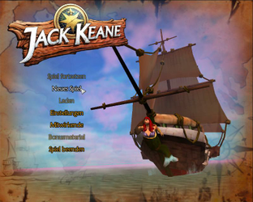
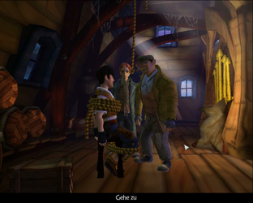

Jack Keane
Dieser Artikel wurde für die folgenden Ubuntu-Versionen getestet:
Ubuntu 14.04 Trusty Tahr
Zum Verständnis dieses Artikels sind folgende Seiten hilfreich:
 Jack Keane
Jack Keane  - England, zur Kolonialzeit: Nicht ganz freiwillig übernimmt Jack Keane, ein erfolgloser Abenteurer, einen Auftrag. Dieser bringt ihm nichts als Ärger ein. Er willigt ein, einen Agenten zu der mysteriösen Insel "Tooth Island" zu befördern, welche von Doctor T. beherrscht wird. Sein Schiff zerschellt an der Küste ... Jack ist auf sich allein gestellt.
- England, zur Kolonialzeit: Nicht ganz freiwillig übernimmt Jack Keane, ein erfolgloser Abenteurer, einen Auftrag. Dieser bringt ihm nichts als Ärger ein. Er willigt ein, einen Agenten zu der mysteriösen Insel "Tooth Island" zu befördern, welche von Doctor T. beherrscht wird. Sein Schiff zerschellt an der Küste ... Jack ist auf sich allein gestellt.
Das Spiel knüpft an die Tradition der guten alten Point & Click Adventures an und enthält viele humorvolle Anspielungen, unter anderem auf die Spieleklassiker Indiana Jones, Monkey Island und Ankh. Die Steuerung des Spiels geschieht hauptsächlich mit der Maus.
|  |
| Menü |
|  |
| Spieleszene |
Installation¶
Desura¶
Nachdem man das Spiel über die Internetseite oder den Client erworben hat, kann das Spiel installiert [1] und über diesen gestartet werden. Alternativ den Installer von Desura herunterladen und wie bei der DVD-Version installieren.
DVD-Version¶
Für die Installation des Spiels benötigt man vorerst eine aktuelle Installationsroutine von der Entwicklerseite  . Nachdem diese heruntergeladen und die Ausführrechte [2] gesetzt worden sind kann das Spiel installiert [3] werden:
. Nachdem diese heruntergeladen und die Ausführrechte [2] gesetzt worden sind kann das Spiel installiert [3] werden:
./jack.keane_1.0.3-multilingual.dvd_x86-20130625.mojo.run
Nun den gewünschten Installationspfad angeben, auswählen, ob ein Eintrag in das Startmenü gewünscht ist und die Installation mittels "Installation beginnen" starten.
Benutzung¶
Nachdem das Spiel zum ersten Mal gestartet wurde, kann man zwischen deutscher , englischer und französischer  Sprache wählen.
Sprache wählen.
Tastenkürzel¶
| Tastenkürzel | |
| Taste(n) | Funktion |
 | Charakter steuern / Objekte betrachten |
 | Aktionen ausführen |
| Esc | Menü aufrufen - Spielstand speichern/laden und Optionen einstellen. |
| Tab ⇆ | Zu erledigende Aufgaben anzeigen. |
| ⏎ | Inventar ein-/ausblenden |
| X | Hotspot-Anzeige - zeigt alle relevanten Objekte zur Lösung an. |
| Zwischensequenzen überspringen. | |
Infobox¶
| Jack Keane | |
| Genre: | Adventure |
| Sprache: | |
| Veröffentlichung: | 2008 |
| Entwickler: | Deck 13 |
| Systemvoraussetzungen: | 1,5 GHz+, 512+ MB RAM, 1,5 GB freier Festplattenspeicher, 64+ MB Grafikkartenspeicher |
| Medien: | DVD (1) / Download |
| Strichcode / EAN / GTIN: | 4041098005061 |
| Läuft mit: | nativ |

- Erstellt mit Inyoka
-
 2004 – 2017 ubuntuusers.de • Einige Rechte vorbehalten
2004 – 2017 ubuntuusers.de • Einige Rechte vorbehalten
Lizenz • Kontakt • Datenschutz • Impressum • Serverstatus -
Serverhousing gespendet von